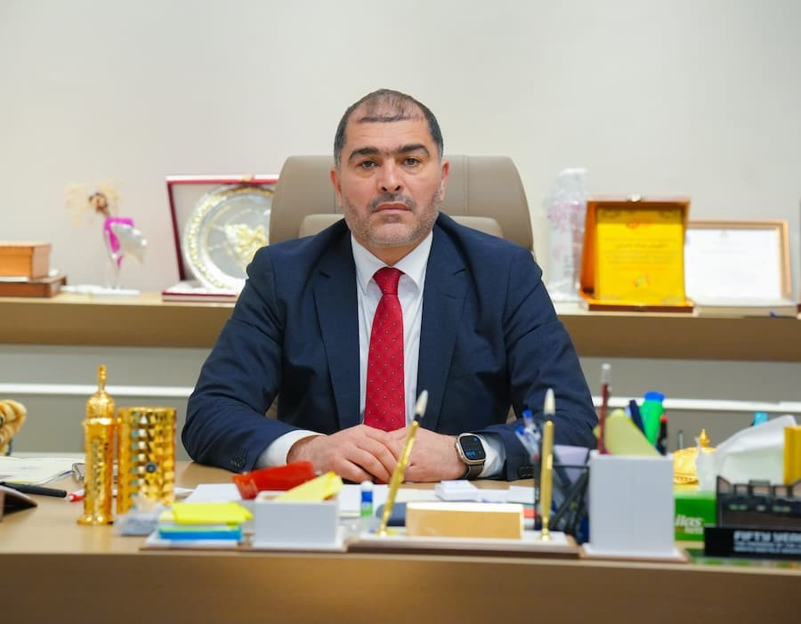

كلمة أ. الشيباني عبدالله الشيباني رئيس مجلس الإدارة

بسم الله الرحمن الرحيم والصلاة والسلام على المبعوث رحمة للعالمين سيدنا محمد عليه أفضل الصلاة وأزكى التسليم.
زملائي وإخوتي وأبنائي من مسؤولي وقيادات ومنتسبي جمعية بيوت الشباب الليبية، إن جمعية بيوت الشباب الليبية العريقة شهدت خلال خمس عقود من تأسيسها عديد المحطات التاريخية والمراحل المختلفة بين الرخاء والشدة والنشاط والركود. وها نحن اليوم مع احتفالنا بالذكرى الخمسين لتأسيس جمعيتنا والتي شهدت توارثاً بين الأجيال وتدرجاً بين اليافعين والشباب والرواد لقيادة دفة الجمعية رغم كل الظروف التي عصفت بها وتعرض مقراتها وبنيتها التحتية للإهمال لعقود من الزمن وبالرغم من كل الظروف وبهمم قياداتنا وشبابنا وصلنا بالجمعية لبر الأمان مجدداً وشهدت بيوت الشباب نهضةً وتطويراً وبناءً للمرافق والكوادر ابتداءًا من العام 2021م بدعم غير مسبوق من وزارة الشباب بحكومة الوحدة الوطنية الليبية.
وأمام هذا المنجز أدعو إخوتي وأبنائي قيادةً ومنتسبين لشحذ الهمم وتكثيف الجهود للرقي بجمعيتنا الحبيبة ووضعها في مصاف متقدمة على المستوى الإقليمي والدولي، كما لا ننسى أن ندعوا بالرحمة والمغفرة على كل من فارقنا ولم يكون بيننا في هذا اليوم من قياداتٍ ورواد ساهموا في تأسيس وتسيير الجمعية طيلة 50 عام.
الشيباني عبدالله الشيباني
رئيس مجلس إدارة جمعية بيوت الشباب الليبية
14 فبراير 2023م